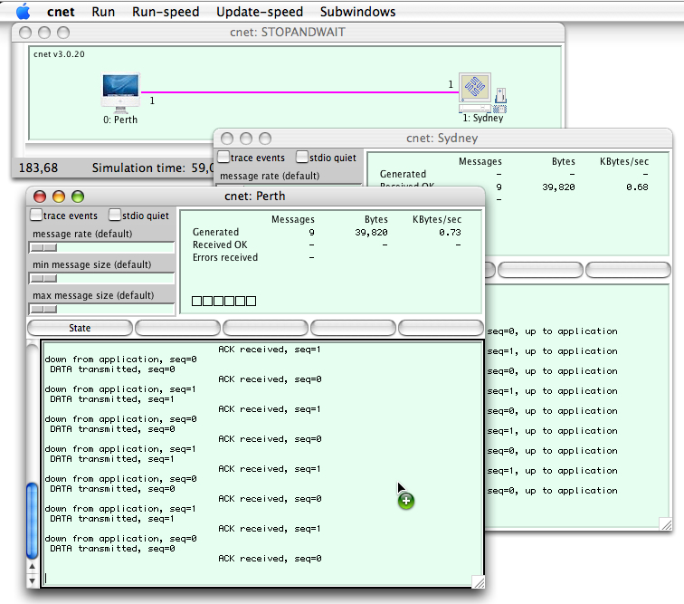
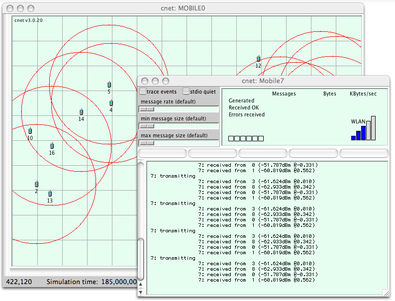

|

|
An introduction to the cnet network simulatorcnet is a network simulator which enables experimentation with various data-link layer, network layer, routing and transport layer networking protocols in networks consisting of any combination of wide-area-networking (WAN), local-area-networking (LAN), or wireless-local-area-networking (WLAN) links. With reference to the OSI/ISO Networking Reference Model, cnet provides the Application and Physical layers. User-written protocols are required to "fill-in" any necessary internal layers and, in particular, to overcome the corrupted and lost frames that cnet's Physical Layer randomly introduces. In addition, advanced users may develop different Application layers exhibiting varying statistical characteristics of message generation and destination pairings. Simulation sizes may range from two to a few hundred nodes. cnet either displays the entire network simulation 'map' under Tcl/Tk or runs rather less visually on an ASCII terminal. Under Tcl/Tk, cnet provides a graphical representation of the network under execution and permits a number of attributes of the network to be modified while the simulation is running. Nodes may be selected with the mouse to reveal a sub-window displaying the output and protocol statistics of that node. Some of the node's attributes, such as message generation rates and sizes, may be modified using checkboxes and sliders. Similarly, the default attributes of all nodes in the network may be simultaneously modified by selecting and changing global attributes. From another menu, each node may be forced to reboot, (impolitely) crash, (politely) shutdown and reboot, pause and (hardware) fail. Note: the images on this page include those from older versions of cnet running under Linux and Mac OS-X.
The above image shows a typical representation of a simple two node simulation, here implementing the stop-and-wait protocol under Mac OS-X. The simulation is currently running but we could pause and then single-step through our protocol using drop-down menus and the keyboard. A total of 99 messages have been delivered so far, and the Application Layer has not been presented with any "incorrect" messages. Our protocol is thus reported as being 100% correct.  Here we've clicked on each node to display its output window. All output seen is generated by calling C's printf() function in the protocol code. Here we see an annotation of the stop-and-wait protocol. The text on the first of the five central buttons has also been defined by the protocol code. If this button is clicked, execution will transfer to code provided by the student's code, perhaps for debugging. An output window is available for each node, even in large simulations.
Selecting a link results in a sub-window being displayed which shows attributes and transmission statistics for that link. Links are bidirectional, so "selecting a link" means clicking on the link close to its source node. The link-based attributes of transmission costs and error probabilities may be modified while the network is running by dragging sliders. Similarly, the attributes of all noade and links in the network may be simultaneously modified by selecting and changing global attributes. cnet is able to automatically detect and report a wide variety of errors commonly made by students when developing their protocols. These include invalid arguments passed to functions, an incorrect specification of links, addresses and timers, undetected message corruption or loss, messages passed to incorrect destinations, out-of-sequence or duplicated messages, etc. As shown in the following image, errors are reported in a popup-window describing the error and its location in the protocol's source code.
cnet can present a limited visualization of data frames traversing each WAN link. Using just colours and lengths, it is possible to display both data and acknowledgment frames, and the contents of some of their fields. In combination, these features may be used to debug implementations of Data Link Layer protocols. Here a selective-repeat protocol is experiencing frame loss (the ghostly white frame) and frame corruption (the singed grey frame).
cnet requires network protocols to be written in the C programming language (conforming to the C99 standard) and supports their execution within a single Linux, UNIX, or Mac OS-X process. A standard compiler, preferably gcc, is used to compile the user-written protocol code. The compiled code is then dynamically linked at run-time with the cnet simulator. Protocols are invoked directly by cnet itself - they are not interpreted. By design, the protocols do not need to contain any windowing code.
cnet supports mobile and wireless networking that may be configured to model IEEE 802.11 networks employing CSMA/CA protocols. Nodes and accesspoints may have one or more Network Interface Cards (NICs) whose attributes of transmission frequency and power, antenna gain, input sensitivity, and power consumption may all be specified in the topology file or modified using cnet's API. All wireless interfaces are, by default, modelled on Orinoco PCMCIA Silver/Gold cards. Mobile nodes may move around the simulation map by determining and setting their current location, and may implement a variety of mobility models using cnet's consistent event-driven approach. Wireless signal propagation models that are aware of the same obstacles and physical environment observed by the mobility models, may also be implemented.  cnet also supports IEEE 802.3 Ethernet segments. Each segment consists of two or more Network Interface Cards (NICs) that connect host or router nodes to the segment. Large networks may be constructed by joining multiple LAN segments via gateway nodes and WAN links. Each NIC's own address is initially defined in the topology file, in the 6-byte hexadecimal format of traditional Ethernets, and cnet provides a function to configure each NIC's address. The simulation of Ethernets is reasonable, but not perfect. cnet supports a fixed transmission rate of 10Mbps, a slot-time of 52usecs, broadcast addressing, collision detection, jamming, and binary exponential backoff, but does not support jitter control nor multicast addressing. Large networks may be constructed by joining multiple LAN segments via gateway nodes and WAN links:
The current values of the node and link attributes (as possibly modified via the windowing interface) are available to the protocol code each node in C data structures and variables. These structures and variables are declared in cnet's header file <cnet.h>, which is included in each node's protocol code. These structures and variables are initialized when each node is rebooted and updated as each node is scheduled for execution (several thousand times per second). Their values are considered as read-only and cannot be (successfully) modified directly by the protocols. They may, of course, be modified via the windowing interface.
Costs or weights may be assigned to each link, to represent the cost of transmitting each frame, or the number of bytes in each frame. Protocols may then be developed to deliver network traffic which either minimize the total cost, or maximize the total flow. |


cnet v3.3.1, written by Chris.McDonald@uwa.edu.au
Last modified: Thu Apr 10 4:35PM 2014